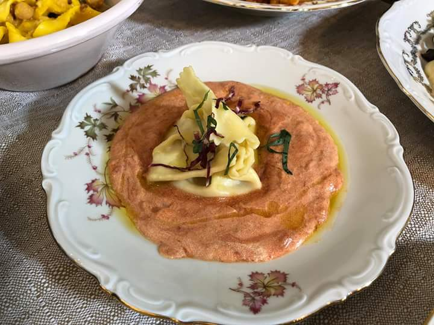
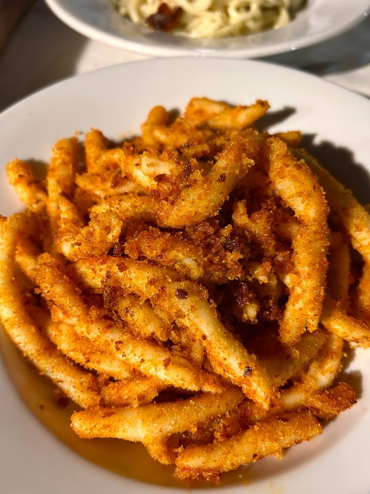
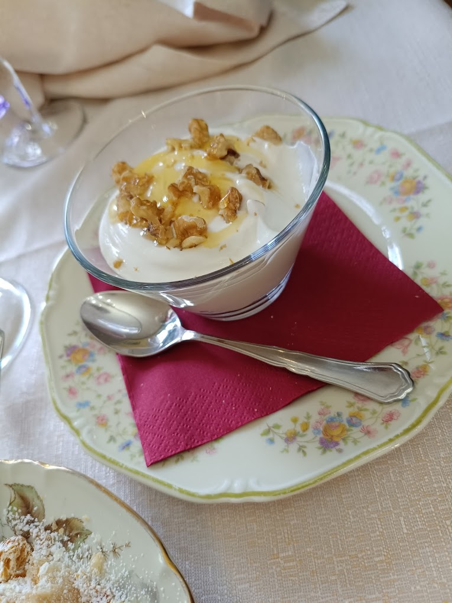
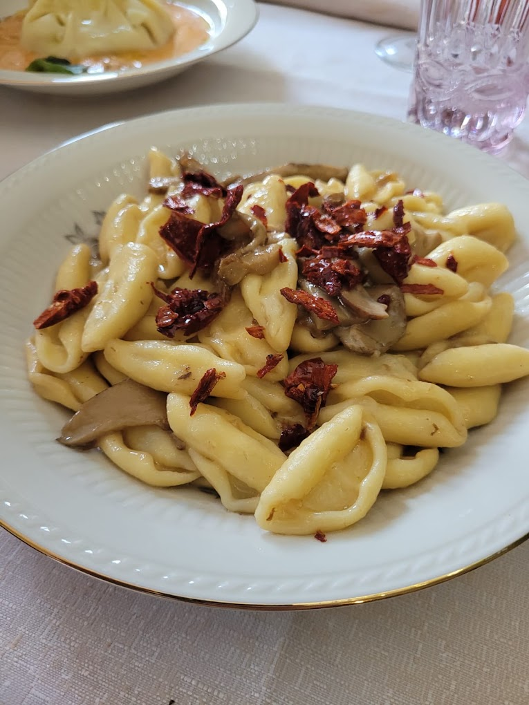
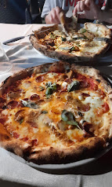
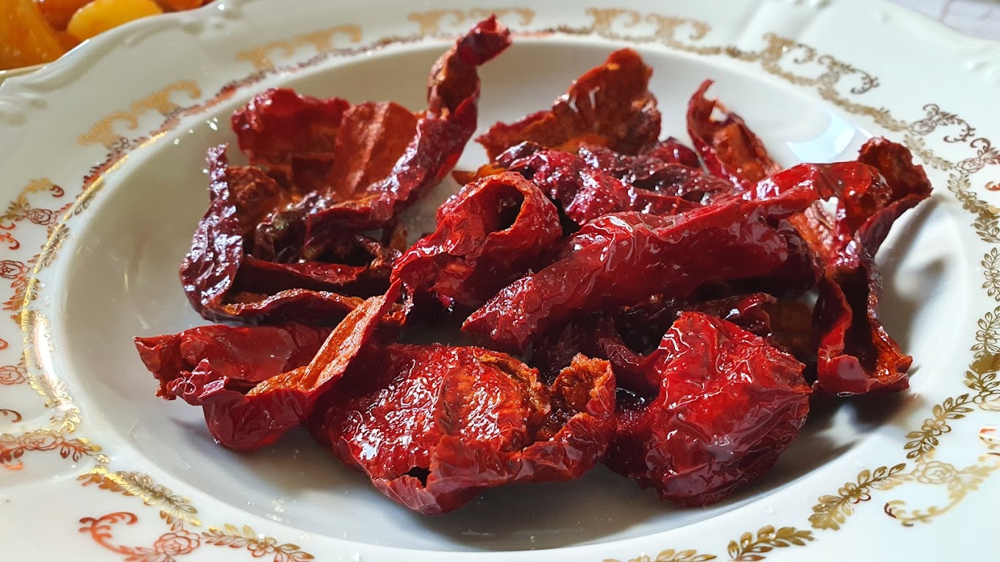
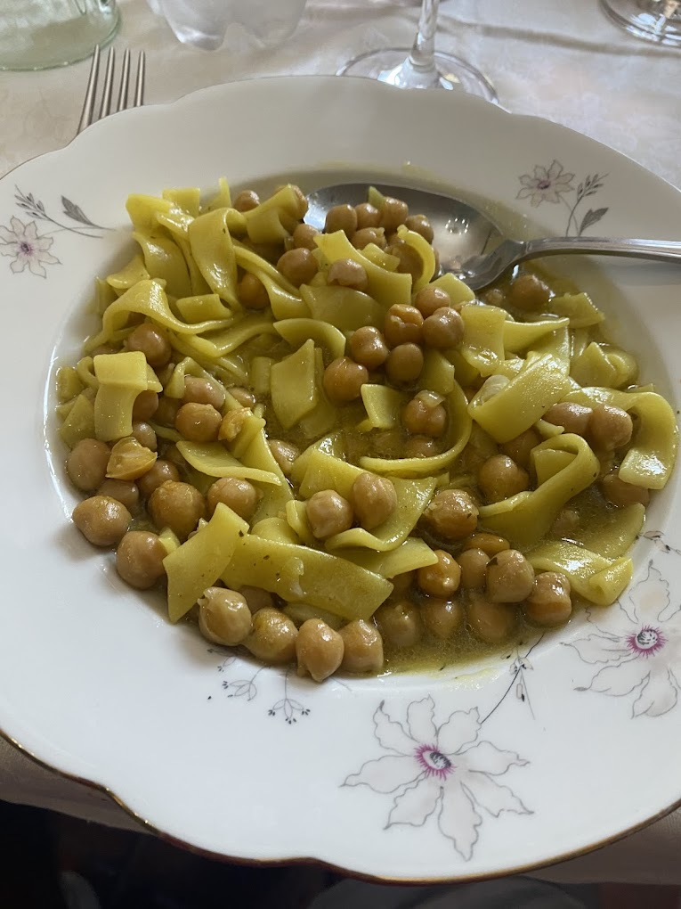
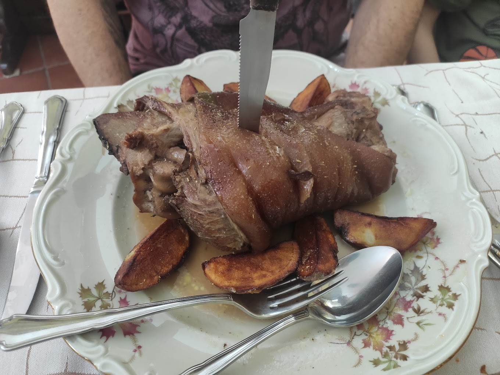
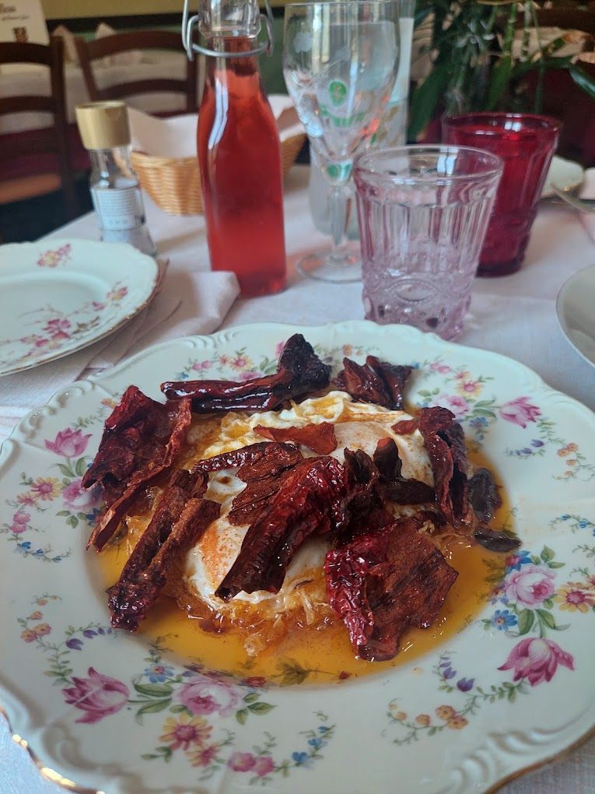
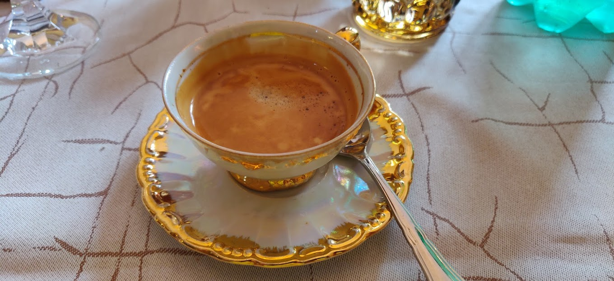

Le nostre prelibatezze
La nostra cucina propone piatti tipici della tradizione valsinnese, con pasta fatta in casa, salumi e formaggi del territorio e ricette che affondano le radici nella storia locale.
Selezioniamo materie prime di qualità, privilegiando produttori locali e stagionalità, per offrire piatti autentici e dal gusto deciso.
Tra le specialità spicca “U’RRAGON”, piatto simbolo della locanda, che racconta una storia antica fatta di rituali, convivialità e sapori di montagna.
Novità
“UR'RAGONE”
La leggenda narra che i nobili del luogo, conti, marchesi o solo grandi proprietari terrieri, potevano esigere il diritto di prima notte dai propri villani. Alla fine del pranzo allo sposo è stata regalata la “coscia della sposa”, una coscia intera di agnello steccata e cucinata a fuoco lento, spesso solo con il riverbero del mattone. In seguito con la scoperta del pomodoro venne trasformata in ragoùt (ragone da zita). Lo ius primae noctis consumato dal notabile veniva così ripagato dall'addentare, da parte dello sposo una splendida coscia farcita con alloro e pepe. Qualcuno malignando mi dice: “conoscendo le bellezze delle contadine di quel periodo e immaginando il profumo di quella carne allevata a spezie d'alta montagna…non sa cosa si perdeva il Conte…”
Scorci dalla nostra cucina
Alcuni piatti e dettagli che potrai trovare presso la nostra locanda.










